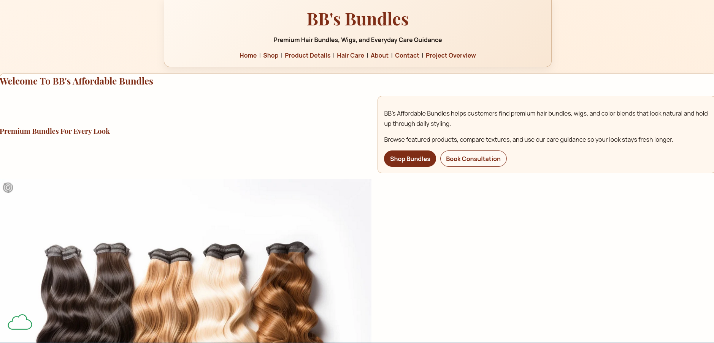

Peer Review 2
Bathily, Kaliou

- Website Checklist Review
- The links are easily accessible at the top and provide a very good ease-of-use for the user. However, the images often clash with the buttons and links and can make it difficult to read.
- The color scheme uses a very good combination of light themes. Good work with the usage of brown and beige!
- Client Project - Part 2 Requirements
- The page has a header, main, and footer so it works well in that regard.
- The page also meets the requirments of the assignment with the five pages. I particularly liked the consultation request form. It was a very thoughtful touch.
- Additional Observations and Suggestions
- The images and video in the website are a good idea, I think they just need to be resized. Also, I noticed that you had the same images for each webpage and I think it would be a better position to use different images of just have the images in your home page.
- A suggestion that would be worth considering is to put all of the images together as a slideshow s othat they take up less space and align better with CRAP principles.
- I think that if you kept with the brown shading for the website, then it would have a better look and feel to it as opposed to just plain white.
Website Link
Review completed by: Marek Christopher Casenhiser
Date: April 19, 2026